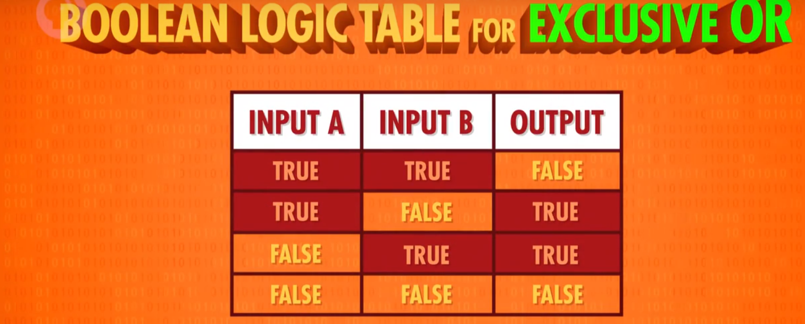
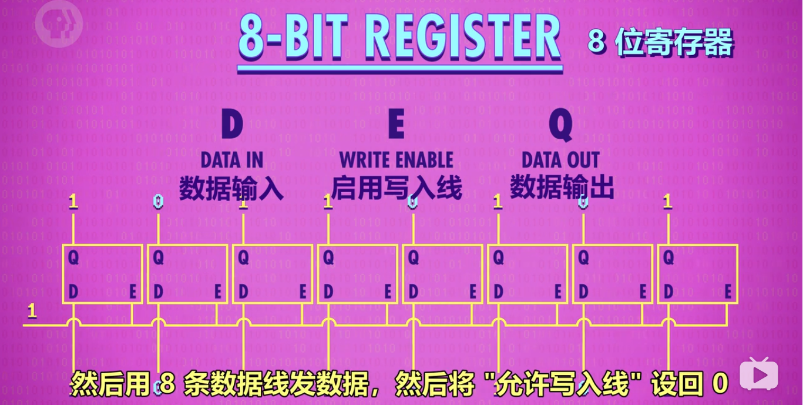

Crash Course Computer Science
视频地址：https://www.bilibili.com/video/BV1EW411u7th/
参考笔记：https://shimo.im/docs/vkCKkj3YxGtygrVg/read https://shimo.im/docs/PJAUY30F1uYksv0h/read
Github 字幕组翻译仓库：https://github.com/1c7/Crash-Course-Computer-Science-Chinese/tree/master
思维导图地址：https://www.processon.com/view/link/61ef6e8f0e3e7439ae917672#map
第 1 集：计算机早期历史
提到的设备：算盘 → 步进计算器 → 差分机 → 分析机 → 打孔卡片制表机
提到的人名：Charles Babbage, Ada Lovelace
02:27 最早的计算设备是算盘，举例如何使用
04:31 Computer 从指代职业变成指代机器
04:57 机器里有名的是：步进计算器。第一个可以做加减乘除的机器
06:44 炮弹为了精准，要计算弹道，二战是查表来做。但每次改设计了就需要做一张新表
07:30 Charles Babbage 提出了 差分机, 在构造差分机期间，想出了分析机, 分析机是通用计算机
08:50 Lovelace 给分析机写了假想程序，因此成为了第一位程序员
09:25 人口普查 10 年一次. Herman Hollerith 的打孔卡片制表机大大提升了效率
0、课程目标：
从高层次总览一系列计算机话题，快速入门计算机科学。
1、计算机技术的影响——进入信息时代
- 出现自动化农业设备与医疗设备
- 全球通信和全球教育机会变得普遍
- 出现意想不到的虚拟现实/无人驾驶/人工智能等新领域
2、计算机的实质：
极其简单的组件，通过一层层的抽象，来做出复杂的操作。
计算机中的很多东西，底层其实都很简单，让人难以理解的，是一层层精妙的抽象。像一个越来越小的俄罗斯套娃。
3、关于计算的历史：
- 公元前2500年，算盘出现，为十进制，功能类似一个计数器。
- 公元前2500年-公元1500年：星盘、计算尺等依靠机械运动的计算设备出现
- 公元1613年：computer的概念出现，当时指的是专门做计算的职业，
- 1694年：步进计算器出现，是世界上第一台能自动完成加减乘除的计算器。
- 1694-1900年：计算表兴起，类似于字典，可用于查找各种庞大的计算值。
- 1823年：差分机的设想出现，可以做函数计算，但计划最后失败。
- 19世纪中期：分析机的设想出现，设想存在可计算一切的通用计算机。
- 1890年：打孔卡片制表机。原理：在纸上打孔→孔穿过针→针泡入汞→电路连通→齿轮使计数+1。
第 2 集：电子计算机
提到的设备：继电器 → 真空管 → 晶体管
00:17 20世纪的发展要求更强的计算能力。柜子大小的计算机发展到房间大小
01:06 哈佛 Mark 1 号，IBM 1944 年做的
02:25 继电器，继电器一秒最多 50 次开关
03:24 继电器出 bug
03:49 1904 年，热电子管出现，第一个真空管。改进后变成和继电器的功能一样
05:34 "巨人1号" 计算机在英国 布莱切利园 首次大规模使用真空管。但编程麻烦，还要配置
06:40 1946 年，宾夕法尼亚大学的 ENIAC 是第一个通用可编程计算机
07:36 1947 年，贝尔实验室做出了晶体管，晶体管有诸多好处，IBM 很快全面转向晶体管
09:27 硅谷的典故：很多晶体管和半导体的开发都是这里做的。而生产半导体最常见的材料是硅
09:41 肖克利半导体 → 仙童半导体 → 英特尔
1、电子计算机元器件变化：
继电器→真空管→晶体管
2、计算机的出现背景：
20世纪人口暴增，科学与工程进步迅速，航天计划成形。以上导致数据的复杂度急剧上升、计算量暴增，对于计算的自动化、高速有迫切的需求。
3、电子计算机的发展：
1945年 哈佛马克1：使用继电器，用电磁效应，控制机械开关，缺点为有磨损和延迟。 *最早还因为有虫子飞进去导致故障，引申出bug=故障的意思。
1943年 巨人1号：使用真空管（三极管），制造出世界上第一个可编程的计算机。
1946年 ENIAC：第一个电子数值积分计算机，为第一台通用计算机。
1947年 晶体管出现，使用的是固态的半导体材料，相对真空管更可靠。
1950s 空军ANFSQ-7： 真空管到达计算极限。
1957年 IBM 608： 第一个消费者可购买的晶体管计算机出现。
第 3 集：布尔逻辑和逻辑门
01:00 什么是二进制, 为什么用二进制, 布尔逻辑
02:46 3个基本操作：NOT，AND，OR
02:51 解释3个基本操作
07:11 XOR 异或
1、计算机为什么使用二进制：
- 计算机的元器件晶体管只有2种状态，通电（1）&断电（0），用二进制可直接根据元器件的状态来设计计算机。
- 而且，数学中的“布尔代数”分支，可以用True和False（可用1代表True，0代表False）进行逻辑运算，代替实数进行计算。
- 计算的状态越多，信号越容易混淆，影响计算。对于当时每秒运算百万次以上的晶体管，信号混淆是特别让人头疼的的。
2、布尔代数&布尔代数在计算机中的实现
- 变量：没有常数，仅True和False这两个变量。
- 三个基本操作：
- NOT/AND/OR。
1）NOT操作：
命名：称为NOT门/非门。
作用：将输入布尔值反转。输入的True或False，输出为False或True。
晶体管的实现方式： - 半导体通电True，则线路接地，无输出电流，为False。 - 半导体不通电False，则输出电流从右边输出，为True。

2）AND操作
命名：AND门/与门
作用：由2个输入控制输出，仅当2个输入input1和input2都为True时，输出才为True，2个输入的其余情况，输出均为False。*可以理解为，2句话（输入）完全没有假的，整件事（输出）才是真的。
用晶体管实现的方式： 串联两个晶体管，仅当2个晶体管都通电，输出才有电流（True）

3）OR操作
命名：OR门/或门
作用：由2个输入控制输出，只要其中一个输入为True，则输出True。
用晶体管实现的方式： 使用2个晶体管，将它们并联到电路中，只要有一个晶体管通电，则输出有电流（True）。

3、特殊的逻辑运算——异或
命名：XOR门/异或门
作用：2个输入控制一个输出。当2个输入均为True时，输出False，其余情况与OR门相同。

图示： 先用一个OR门，将其与AND门并联，AND门与NOT门串联，最后让NOT与AND门并联，获得输出。
4、逻辑门的符号表示
作用：将逻辑门简化，将逻辑门用于构建更大的组件，而不至于太复杂。
图示：
- 非门：用三角形+圆圈表示
- 与门：用D型图案表示
- 或门：用类似D向右弯曲的图案表示
- 异或门：用或门+一个圆弧表示
5、抽象的好处
使得分工明确，不同职业的工程师各司其职,而不用担心其他细节。
第 4 集：二进制
00:46 用十进制举例二进制的原理，演示二进制加法。存储单位 MB GB TB 等
05:30 正数，负数，整数，浮点数的表示
07:20 美国信息交换标准代码 - ASCII, 用来表示字符
09:00 UNICODE 1992 年诞生，是字符编码标准， 解决 ASCII 不够表达所有语言的问题
1、二进制的原理，存储单元 MB/GB/TB 解释
计算机中的二进制表示：
单个数字 1 或 0，1 位二进制数字命名为位(bit),也称 1 比特。
字节（byte）的概念： 1byte=8bit，即 1byte 代表 8 位数字。最早期的电脑为八位的，即以八位为单位处理数据。为了方便，将八位数字命名为 1 字节（1byte）.
十进制与二进制的区别：
- 十进制有 10 个数字，0-9，逢 10 进 1（不存在 10 这个数字），则每向左进一位，数字大 10 倍。
- 二进制有 2 个数字，0-1，逢 2 进 1,（不存在 2 这个数字），则每向左进一位，数字大 2 倍。
如何进行二进制与十进制联系起来：
- 将十进制与二进制的位数提取出来，编上单位： eg.二进制的 1011=12^0 + 12^1 + 02^2 + 12^3= 11（从右往左数） eg.十进制的 1045= 110^3 + 010^2 + 410^1 + 510^0
byte 在电脑中的单位换算：
1kb=2^10bit = 1024byte =1000b
1TB=1000GB
1GB=十亿字节=1000MB=10^6KB
32 位与 64 位电脑的区别：
32 位的最大数为 43 亿左右 32 位能表示的数字：0——2的32次方-1，一共2的32次方个数
64 位的最大数为 9.2*10^18
2、正数、负数、正数、浮点数的表示
1）计算机中表示数字的方法
整数： 表示方法:
- 第 1 位：表示正负 1 是负，0 是正（补码）
- 其余 31 位/63 位： 表示实数
浮点数（Floating Point Numbers）：
定义：小数点可在数字间浮动的数（非整数）
表示方法：IEEE 754 标准下
用类似科学计数法的方式，存储十进制数值
- 浮点数=有效位数*指数
- 32 位数字中：第 1 位表示正负，第 2-9 位存指数。剩下 23 位存有效位数
eg.625.9=0.6259（有效位数）*10^3（指数）
3、美国信息交换标准代码-ASCⅡ，用来表示字符
全称：美国信息交换标准代码
作用：用数字给英文字母及符号编号
内容：7 位代码，可存放 128 个不同的值。
4、UNICODE，统一所有字符编码的标准
诞生背景：1992 诞生，随着计算机在亚洲兴起，需要解决 ASCⅡ不够表达所有语言的问题。
为提高代码的互用性，而诞生的编码标准。
内容：UNICODE 为 17 组的 16 位数字，有超过 100 万个位置，可满足所有语言的字符需求。
第 5 集：算数逻辑单元 - ALU
00:03 简单介绍 ALU ，英特尔 74181
01:24 ALU 有 2 个单元，1 个算术单元和 1 个逻辑单元
01:32 算术单元
半加器 (处理1个 bit，2个输入)
全加器 (处理1个 bit，3个输入)
8 bit 加法 (1个半加器，7个全加器）
溢出的概念，吃豆人的例子
乘法除法
07:32 逻辑单元
检测数字是否为 0 的电路（一堆 OR 门最后加个 NOT 门）
ALU 抽象成一个 V 符号
Flag 标志（是否相等，是否小于，是否溢出等等）
1、什么是算术逻辑单元
命名：简称 ALU，Arithmetic&Logic Unit
组成：ALU 有 2 个单元，1 个算术单元和 1 个逻辑单元（Arithmetic Unit 和 Logic Unit）
作用：计算机中负责运算的组件，处理数字/逻辑运算的最基本单元。
2、算术单元
1）基本组件：
- 由半加器、全加器组成
- 半加器、全加器由 AND、OR、NOT、XOR 门组成
2）加法运算
组件：AND、OR、NOT、XOR 门
元素：输入 A，输入 B，输出（均为 1 个 bit，即 0 或 1）
半加器：
- 作用：用于计算个位的数字加减。
- 输入：A，B
- 输出：总和，进位 sum：总和 carry：进位
全加器：
作用：用于计算超过 1 位的加法（ex：1+1+1），由于涉及进位，因此有 3 个输入（C 充当进位）。

3）如何用半加器与全加器做 8 位数的加法
 说明：以 8 位行波加法器为例
说明：以 8 位行波加法器为例
- 用半加器处理第 1 位数（个位）的加法，得到的和为结果的第 1 位。
- 将输出的进位，输入到第 2 位用的全加器的输入 C 中。
- 将第 2 位的 2 个数用全加器计算，得到的和为结果的第 2 位（sum）。
- 将第 2 位计算的进位连接到百位的全加器输入 C 中。
- 在第 3-8 位上，循环第 3-4 步的操作。 现在电脑使用的加法器叫“超前进位加法器”
3、溢出的概念
内容：在有限的空间内，无法存储位数过大的数，则称为溢出。
说明：第 8 位的进位如果为 1，则无法存储，此时容易引发错误，所以应该尽量避免溢出。
4、逻辑单元
作用：执行逻辑操作，如 NOT、AND、OR 等操作，以及做简单的数值测试。
5、ALU 的抽象
1）作用：ALU 的抽象让工程师不再考虑逻辑门层面的组成，简化工作。
2）图示： 像一个大V。
3）说明： 图示内容包括： - 输入 A，B - 输出 - 标志：溢出、零、负数
第 6 集：寄存器和内存
本集重点是 Memory （存储 / 内存 两种含义）
03:30 存 1 位 (Gated Latch - 锁存器）
04:48 存 8 位 (Register - 寄存器)
05:46 16x16 的矩阵存 256 位
数据选择器/多路复用器 (Multiplexer) 解码 8 位地址，定位到单个锁存器
07:38 4 位代表行， 4 位代表列
08:16 组合 256 位内存 + 多路复用器
09:01 可寻址的 256 字节 内存
一条1980年代的内存，1M 大小
10:14 8个模块，每个模块有32个小方块，
每个小方块有 4 个小块，每个小块是 128 位 x 64 位
0、课程导入
当玩游戏、写文档时如果断电，进度会丢失，这是为什么？
- 原因是这是电脑使用的是 RAM（随机存取存储器），俗称内存，内存只能在通电情况下存储数据。
- 本节课程将讲述内存的工作原理。
1、概念梳理
锁存器：锁存器是利用 AND、OR、NOT 逻辑门，实现存储 1 位数字的器件。
寄存器：1 组并排的锁存器
矩阵：以矩阵的方式来存放锁存器的组合件，nn 门锁矩阵可存放 n^2 个锁存器，但同一时间只能写入/读取 1 个数字。（早期为 1616 矩阵）
位址：锁存器在矩阵中的行数与列数。eg.12 行 8 列
多路复用器：一组电线，输入 2 进制的行址&列址，可启用矩阵中某个锁存器
内存（RAM）：随机存取存储器，由一系列矩阵以及电路组成的器件，可根据地址来写入、读取数据。类似于人类的短期记忆，记录当前在做什么事情。
2、锁存器
作用：存储 1 位数字。
图示：

2.5、门锁：
锁存器需要同时输入 2 个数字，不太方便。
为了使用更方便，只用 1 根电线控制数据输入，发展了门锁这个器件。另外，用另一根电线来控制整个结构的开关。（和复位作用不同）

3、寄存器
作用：并排使用门锁，存储多位数字 图示： 
4、门锁矩阵
作用： n*n 的矩阵有 n^2 个位址，则可以存储 n^2 个数。但 1 个矩阵只可记录 1 位数字，n 个矩阵组合在一起，才可记录 n 位数。如 1 个 8 位数，会按位数分成 8 个数，分别存储在 8 个矩阵的同一个位址中。 8 个矩阵，则可以记录 256 个 8 位数字。
通俗理解： 1616 的门锁矩阵，可理解为 1 个公寓，1 个公寓 256 个房间。 8 个门锁矩阵并排放，则有了 8 个公寓。 规定每一个公寓同一个编号的房间，都有一样的标记（地址），共同组成 8 位数字。 那么 8 个公寓就能存 （8256 / 8）个数字。
原因： 16*16 的门锁矩阵虽然有 256 个位置，但每次只能存/取其中 1 个位置的数字。因此，要表示 8 位数字，就需要同时调用 8 个门锁矩阵。
使用方法：在多路复用器中输入位址，x 行 x 列（2 进制），即可点亮 x 行 x 列的锁存器。
举例：
| 行列数 | 矩阵 1 | 矩阵 2 | 矩阵 3 | 矩阵 4 | 矩阵 5 | 矩阵 6 | 矩阵 7 | 矩阵 8 |
|---|---|---|---|---|---|---|---|---|
| 1 行 5 列 | 1 | 0 | 1 | 1 | 0 | 0 | 1 | 0 |
| 2 行 3 列 | 0 | 1 | 0 | 0 | 1 | 1 | 0 | 1 |
5、内存
粗略定义：将一堆独立的存储模块和电路看做 1 个单元，组成内存方块，n 个内存方块组成内存模块。在一个电路板上所有的内存方块统称为内存(RAM)。
第 7 集：中央处理器（CPU)
重点
- 拼个 CPU 出来
- CPU 怎么执行命令
01:00 RAM + 寄存器 + ALU 做个 CPU
04:00 解释 "取指令→解释→执行" 这个循环
08:00 时钟是什么, 时钟速度和赫兹
10:00 超频提升性能, 降频省电
1、概念梳理
- CPU（Central Processing Unit）：中央处理单元，负责执行程序。通常由寄存器/控制单元/ALU/时钟组成。与 RAM 配合，执行计算机程序。CPU 和 RAM 之间用“地址线”、“数据线”和“允许读/写线”进行通信。
- 指令：指示计算机要做什么，多条指令共同组成程序。如数学指令，内存指令。
- 时钟：负责管理 CPU 运行的节奏，以精确地间隔，触发电信号，控制单元用这个信号，推动 CPU 的内部操作。
- 时钟速度：CPU 执行“取指令→解码→执行”中每一步的速度叫做“时钟速度”，单位赫兹Hz，表示频率。
- 超频/降频：
- 超频，修改时钟速度，加快 CPU 的速度，超频过多会让 CPU 过热或产生乱码。
- 降频，降低时钟速度，达到省电的效果，对笔记本/手机很重要。
- 微体系框架：以高层次视角看计算机，如当我们用一条线链接 2 个组件时，这条线只是所有必须线路的抽象。
2、CPU 工作原理
1）必要组件
- 指令表：给 CPU 支持的所有指令分配 ID
- 控制单元：像指挥部，有序的控制指令的读取、运行与写入。
- 指令地址寄存器：类似于银行取号。该器件只按顺序通报地址，让 RAM 按顺序将指令交给指令寄存器。
- 指令寄存器：存储具体的指令代码。
2）过程
- 取指令：指令地址寄存器发地址给 RAM→RAM发该地址内的数据给指令寄存器→指令寄存器接受数据
- 解码：指令寄存器根据数据发送指令给控制单元 →控制单元解码（逻辑门确认操作码）
- 执行阶段：控制单元执行指令(→涉及计算时→调用所需寄存器→传输入&操作码给ALU执行）→调用RAM特定地址的数据→RAM将结果传入寄存器→指令地址寄存器+1
第 8 集：指令和程序
本集重点：一步步带你运行一遍程序
00:45 回顾上集的例子程序，一步步讲解。介绍”指令集”的概念
LOAD_A，LOAD_B，SUB，JUMP，ADD，HALT 等指令
05:16 带条件跳转，JUMP NEGATIVE 是负数才跳转，还有其他类型的 JUMP
08:00 真正现代 CPU 用更多指令集。位数更长。
09:07 1971年的英特尔 4004 处理器，有 46 个指令
09:36 如今英特尔酷睿 i7, 有上千条指令
1、概念梳理
- 指令：指示计算机要做什么的代码（机器码），多条指令共同组成程序。如数学指令，内存指令。
- 注:指令和数据都是存在同一个内存里的。
- 指令集：记录指令名称、用法、操作码以及所需 RAM 地址位数的表格。
2、指令的执行
-
原则：
- RAM 每一个地址中，都存放 0 或 1 个数据。
- 特定的数字组合，就表示为一个指令，否则表示一个值。
-
LOAD 指令：
- 计算机会按地址的顺序，读取 RAM 中所记录的指令/数据。
- 计算机接受到指令后，如 LOAD_A，则通过数据线将数据传至寄存器 A。
-
ADD 指令：
- ADD B A 指令告诉 ALU，把寄存器 B 和寄存器中的数字加起来，存到寄存器 A 中。
-
JUMP 指令：
- 遇到 JUMP 指令，程序会跳转至对应的 RAM 地址读取数据。
- JUMP 指令可以有条件跳转（如 JUMP-negative），也可以无条件跳转。
3、计算机指令长度
由于早期计算机（4位）每个字只有 8 位，指令只占 4 位，意味着只能有 16 个指令，这远远不够。 现代计算机有两种方式解决指令不够用的问题： 最直接的是用更多位来表示指令，如 32 位或 64 位。 采用“可变指令长度”，令不同的指令的长度不同，尽量节约位数。 假设 1 个字为 16 位，如果某指令不需要操作内存，则可以省去寻址的位数。 该情况下，部分指令后面需要跟数据，如 JUMP，称为立即值。
第 9 集：高级 CPU 设计
00:24 早期是加快晶体管切换速度，来提升 CPU 速度
01:20 给 CPU 专门的除法电路 + 其他电路来做复杂操作，比如游戏，视频解码
02:28 给 CPU 加缓存，提高数据存取速度，更快喂给 CPU，用计算餐馆销售额举例
05:13 脏位 - Dirty bit
05:33 流水线设计，用 1 个洗衣机和 1 个干燥机举例
06:01 并行处理 - parallelize
07:33 乱序执行 - out-of-order execution
08:21 推测执行 - speculative execution
08:50 分支预测 - branch prediction
09:34 多个 ALU
09:54 多核 (Core)
10:11 多个独立 CPU
10:52 超级计算机，中国的神威 太湖之光
0、概念梳理
- 缓存：在 CPU 中的小块 RAM，用于存储批量指令。
- 缓存命中：想要的数据已经在缓存里
- 缓存未命中：想要的数据不在缓存里
- 脏位：缓存里每块空间，有个特殊标记，叫脏位，用于检测缓存内的数据是否与 RAM 一致。
- 多核处理器：一个 CPU 芯片中，有多个独立处理单元。
1、现代 CPU 如何提升性能：
早期通过加快晶体管速度，来提升 CPU 速度。但很快该方法到达了极限。
后来给 CPU 设计了专门除法电路+其他电路来做复杂操作：如游戏，视频解码
2、缓存：
为了不让 CPU 空等数据，在 CPU 内部设置了一小块内存，称为缓存，让 RAM 可以一次传输一批数据到 CPU 中。（不加缓存，CPU 没位置放大量数据）
缓存也可以当临时空间，存一些中间值，适合长/复杂的运算。
脏位：储存在缓存中与 RAM 不一致的数据
空等原因：从 RAM 到 CPU 的数据传输有延迟（要通过总线，RAM 还要时间找地址、取数据、配置、输出数据）。
3、缓存同步：
缓存同步一般发生在 CPU 缓存已满，但 CPU 仍需往缓存内输入数据。此时，被标记为脏位的数据会优先传输回 RAM,腾出位置以防被覆盖，导致计算结果有误。
4、指令流水线：
作用：让取址→解码→执行三个步骤同时进行。并行执行指令，提升CPU性能。
原本需要 3 个时钟周期执行 1 个指令，现在只需要 1 个时钟周期。
设计难点：数据具有依赖性 跳转程序
数据依赖性解决方法：乱序运行、预测分支（高端 CPU）
5、一次性处理多条指令
加多个相同的电路执行出现频次很高的指令
6、同时运行多个指令流（多核 CPU）
多核处理器：一个 CPU 芯片中，有多个独立处理单元。但因为它们整合紧密，可以共享一些资源。
7、超级计算机（多个 CPU）
在一台计算机中，用无数个 CPU，做怪兽级的复杂运算，如模拟宇宙形成。
第 10 集：早期的编程方式
本集重点：早期计算机如何编程
打孔纸卡 → 插线板 → 面板拨开关
00:00 开头说本集重点：程序如何进入计算机
00:53 拿纺织业举例，给机器编程的需求远在计算机出现前就有了
01:41 打孔纸卡 - Punched card
02:36 插线板 - Plugboard
04:20 冯诺依曼架构 - Von Neumann Architecture
07:00 面板编程 - Panel programming
07:29 第一款取得商业成功的家用计算机: Altair 8800
08:15 编程依然很困难，人们需要更友好更简单的方式编程
08:44 下周主题：编程语言
1、早期，程序如何进入计算机
程序必须人为地输入计算机。早期，电脑无内存的概念，人们通过打孔纸卡等物理手段，输入数据（数字），进入计算机。
Hello 的 摩斯密码 ... . .-.. .-.. ---(Morse code)
2、早期计算机的编程
- 打孔纸卡/纸带：在纸卡上打孔，用读卡器读取连通电路，进行编程。原因，穿孔纸卡便宜、可靠也易懂。62500 张纸卡=5MB 数据
- 插线板：通过插拔线路的方式，改变器件之间的连接方式，进行编程。
- 面板开关（1980s 前）：通过拨动面板上的开关，进行编程。输入二进制操作码，按存储按钮，推进至下一个内存位，直至操作完内存，按运行键执行程序。（内存式电脑）
3、现代计算机基础结构——冯诺依曼计算机
冯诺依曼计算机的标志是，一个处理器(有算术逻辑单元)+数据寄存器+指令寄存器+指令地址寄存器+内存
第 11 集：编程语言发展史
编程：二进制 → 助记符（汇编器）→ A-0（编译器）→ FORTRAIN
01:45 二进制写程序，先纸上写伪代码，手工转二进制，很快就烦了
02:28 用“助记符” 写代码（LOAD_A 14）为了把助记符转二进制，汇编器诞生 (Assembler)
04:32 葛丽丝·霍普 (Grace Hopper) - 哈佛1号计算机首批程序员, 海军军官
05:13 Grace 设计了编程语言 A-0
05:29 Grace 1952 年做了第一个编译器 (Compiler)，实现 A-0
06:29 变量 (Variables)
07:01 FORTRAN
08:18 COBOL
09:25 新语言
1960 年代：ALGOL，LISP，BASIC
1970 年代：Pascal，C，Smalltalk
1980 年代：C++，Objective-C，Perl
1990 年代：Python，Ruby，Java
0、概念梳理
伪代码：用自然语言（中文、英语等）对程序的高层次描述，称为“伪代码” 汇编器：用于将汇编语言装换成机器语言。一条汇编语句对应一条机器指令。 助记符（汇编器）：软件
1、早期二进制写代码
先前都是硬件层面的编程，硬件编程非常麻烦，所以程序员想要一种更通用的编程方法，就是软件。
早期，人们先在纸上写伪代码，用"操作码表"把伪代码转成二进制机器码，翻译完成后，程序可以喂入计算机并运行。
2、汇编器&助记符
背景：1940~1950s，程序员开发出一种新语言， 更可读 更高层次（汇编码）。每个操作码分配一个简单名字，叫"助记符"。但计算机不能读懂“助记符”，因此人们写了二进制程序“汇编器"来帮忙
作用：汇编器读取用"汇编语言"写的程序，然后转成"机器码"。
3、最早高级编程语言“A-0”
汇编只是修饰了一下机器码，一般来说，一条汇编指令对应一条机器指令，所以汇编码和底层硬件的连接很紧密，汇编器仍然强迫程序员思考底层逻辑。
1950s，为释放超算潜力，葛丽丝·霍普博士，设计了一个高级编程语言，叫 "Arithmetic Language Version 0"，一行高级编程语言 可以转成几十条二进制指令。但由于当时人们认为，计算机只能做计算，而不能做程序，A-0 未被广泛使用。
过程：高级编程语言→编译器→汇编码/机器码
4、开始广泛应用的高级编程语言 FORTRAN
1957 年由 IBM1957 年发布，平均来说，FORTRAN 写的程序，比等同的手写汇编代码短 20 倍，FORTRAN 编译器会把代码转成机器码。但它只能运行于一种电脑中。
FORTRAN 项目总监：Much of my work has come from being lazy. I did't like writing programs, and so ... I started work on a programming system to make it easier to write programs.
5、通用编程语言——COBOL
1959 年，研发可以在不同机器上通用编程语言。
最后研发出一门高级语言："普通面向商业语言"，简称 COBOL
每个计算架构需要一个 COBOL 编译器，不管是什么电脑都可以运行相同的代码，得到相同结果。
6、现代编程语言:1960s-2000
1960s 起，编程语言设计进入黄金时代。
1960：LGOL, LISP 和 BASIC 等语言
70 年代有：Pascal，C 和 Smalltalk
80 年代有：C++，Objective-C 和 Perl
90 年代有：Python，Ruby 和 Java
7、安全漏洞&补丁由来：
在 1940 年代，是用打孔纸带进行的，但程序出现了问题（也就是漏洞），为了节约时间，只能贴上胶带也就是打补丁来填补空隙，漏洞和补丁因此得名。
第 12 集：编程基础 - 语句和函数
00:50 变量, 赋值语句
02:08 Grace Hopper 拍虫子游戏
02:52 if 判断
04:19 while 循环
05:48 for 循环
07:00 函数
11:11 下集介绍算法
1、变量、赋值语句
如a=5 ，其中a为可赋值的量，叫做变量。把数字 5 放a里面.这叫"赋值语句"，即把一个值赋给一个变量
2、if判断
可以想成是 "如果 X 为真，那么执行 Y，反之，则不执行Y"，if语句就像岔路口，走哪条路取决于条件的真假。
3、while循环
当满足条件时进入循环，进入循环后，当条件不满足时，跳出循环。
4、for循环
for循环不判断条件，判断次数，会循环特定次数，不判断条件。for 的特点是，每次结束， i 会 +1
5、函数
当一个代码很常用的时候，我们把它包装成一个函数（也叫方法或者子程序），其他地方想用这个代码，只需要写函数名即可。
第 13 集：算法入门
03:00 选择排序 - Selection sort
03:52 大 O 表示法 - Big O notation
04:31 归并排序 - Merge sort
08:03 Dijkstra 算法
0、基本慨念
算法：解决问题的基本步骤
1、选择排序
数组：一组数据
选择排序的复杂度为O(n²)
2、大O表示法
大O表示法（算法）的复杂度：算法的输入大小和运行步骤之间的关系，来表示运行速度的量级
3、归并排序
归并排序的算法复杂度为O（n*log n），n是需要比较+合并的次数，和数组大小成正比，log n是合并步骤所需要的的次数，归并排序比选择排序更有效率
4、Dijkstra算法
一开始复杂度为O(n²)，后来复杂度为O（nlog n +I），n表示节点数，I表示有多少条线。
第 14 集：数据结构
00:39 数组 - Array
02:06 字符串 - String
03:12 矩阵 - Matrix
04:05 结构体 - Struct
04:46 指针 - Pointer
04:44 节点 - Node
04:53 链表 - Linked List
06:21 队列 - Queue
06:21 栈 - Stack
07:31 树 - Tree
08:01 二叉树 - Binary Tree
08:26 图 - Graph
08:50 没时间讲红黑树和堆, 不同数据结构适用不同场景
1、数组 下标
数组（Array），也叫列表（list）或向量（Vector），是一种数据结构。为了拿出数组中某个值，我们要指定一个下标（index），大多数编程语言里，数组下标都从 0 开始，用方括号 [ ] 代表访问数组。注意：很容易混淆 "数组中第 5 个数" 和 "数组下标为 5 的数"，数组下标为5的数是数组里面的第6个数
2、字符串
即字母 数字 标点等组成的数组，字符串在内存里以0结尾。
3、矩阵
可以把矩阵看成数组的数组
4、结构体
把几个有关系的变量存在一起叫做结构体
5、指针
指针是一种特殊变量，指向一个内存地址，因此得名。
6、节点
以指针为变量的结构体叫节点
7、链表
用节点可以做链表，链表是一种灵活数据结构，能存很多个 节点 (node)，灵活性是通过每个节点 指向 下一个节点实现的。链表可以是循环的也可以是非循环的，非循环的最后一个指针是0
8、队列
"队列" 就像邮局排队，谁先来就排前面，这叫 先进先出（FIFO——first in first out），可以把"栈"想成一堆松饼,做好一个新松饼，就堆在之前上面,吃的时候，是从最上面开始
9、栈
栈是后进先出(LIFO)
10、树
11、图
如果数据随意连接，有循环，我们称之为图。
第 15 集：阿兰·图灵
00:33 介绍图灵
00:52 可判定性问题
01:14 阿隆佐·丘奇，Lambda 算子
01:38 图灵机
04:54 停机问题
08:09 破解德军英格玛加密机
10:40 图灵测试
11:18 图灵的个人生活
12:07 图灵奖
0、可判定性问题
是否存在一种算法，输入正式逻辑语句 输出准确的"是"或"否"答案？
1、阿隆佐邱奇，Lambda算子
美国数学家 阿隆佐·丘奇，开发了一个叫"Lambda 算子"的数学表达系统，证明其不存在。
2、图灵机
只要有足够的规则，状态和纸带，图灵机可以解决一切计算问题。和图灵机一样完备，叫做图灵完备。
3、停机问题
证明图灵机不能解决所有问题。
4、图灵测试
向人和机器同时发信息，收到的回答无法判断哪个是人，哪个是计算机，则计算机达到了智能程度。
第 16 集：软件工程
01:31 对象 Object
02:39 面向对象编程 Object Oriented Programming.
03:55 API Application Programming Interface
04:33 public, private
05:36 集成开发环境, IDE - Integrated Development Environments
06:09 调试 debugging
06:31 文档和注释 - readme, comment
07:33 版本控制 Version control
08:50 质量控制 Quality Assurance testing，QA
09:21 Beta, Alpha
1、对象
当任务庞大，函数太多，我们需要把函数打包成层级，把相关代码都放一起，打包成对象。对象可以包括其他对象，函数和变量。把函数打包成对象的思想叫做“面向对象编程”，面向对象的核心是隐藏复杂度，选择性的公布功能。
2、API
当团队接收到子团队编写的对象时，需要文档和程序编程接口（API）来帮助合作。API控制哪些函数和数据让外部访问，哪些仅供内部。
3、集成开发环境（IDE）
程序员用来专门写代码的工具
4、调试（debug）
IDE帮你检查错误，并提供信息，帮你解决问题，这个过程叫调试
5、文档与注释
文档一般放在一个叫做README的文件里，文档也可以直接写成“注释”，放在源代码里，注释是标记过的一段文字，编译代码时，注释会被忽略。注释的唯一作用是帮助开发者理解代码。
6、版本控制
版本控制，又称源代码管理。大型软件公司会把会把代码放到一个中心服务器上，叫"代码仓库"，程序员可以把想修改的代码借出，修改后再提交回代码仓库。版本控制可以跟踪所有变化，如果发现bug，全部或部分代码，可以"回滚"到之前的稳定版。
7、质量控制
测试可以统称“质量保证测试”（QA），作用是找bug
8、beta alpha
beta版软件，即是软件接近完成，但没有完全被测试过，公司有时会向公众发布beta版，以帮助发现问题。alpha是beta前的版本，一般很粗糙，只在内部测试
第 17 集：集成电路与摩尔定律
本集重点：晶圆的制作流程：光刻 (04:21~07:42)
00:51 分立元件 Discrete components
01:09 数字暴政 Tyranny of Numbers - 是 1960 年代工程师碰到的问题
意思是如果想加强电脑性能，就要更多部件，这导致更多线路，更复杂。所以很难做
04:21 光刻 Photolithography
04:26 晶圆 Wafer
04:57 光刻胶 Photoresist
05:08 光掩膜 Photomask
06:00 掺杂 Doping
09:09 摩尔定律 Moore’s Law.
09:38 英特尔 Intel
10:20 晶体管数量大幅度增长, 1980年三万个，1990年一百万个，2000年三千万个，2010年十亿个
11:44 进一步小型化会碰到 2 个问题 1. 光的波长不足以制作更精细的设计 2. 量子隧穿效应
1、分立元件与数字暴政
一开始，计算机都有独立组件构成，叫"分立元件" ， 然后不同组件再用线连在一起，这会导致计算机的构成很复杂，这个问题叫做数字暴政。
2、集成电路与仙童半导体
封装复杂性：与其把多个独立部件用电线连起来，拼装出计算机，不如把多个组件包在一起，变成一个新的独立组件。这种新的独立组件就叫集成电路（IC），仙童半导体（用硅做成）让集成电路变成了现实。为了不用焊接或用一大堆线，发明了印刷电路板（PCB），他通过蚀刻金属线的方式把零件连接到一起
3、光刻
即用光把复杂图案印到材料上。我们把一片薄片状的硅叫做晶圆，通过一系列生产步骤，将晶圆表面薄膜的特定部分除去的工艺叫做光刻。
4、摩尔定律
每两年左右，得益于材料和制造技术的发展 ，同样大小的空间，能塞进两倍数量的晶体管。
5、进一步小型化会碰到的问题
- 由于光的波长限制，精度已到极限。
- 量子隧穿效应：当晶体管非常小，电极之间可能只距离几个原子，电子会跳过间隙，会产生漏电问题
第 18 集：操作系统
00:48 操作系统 Operating systems
01:34 批处理 Batch processing
01:58 计算机变便宜变多，有不同配置，写程序处理不同硬件细节很痛苦，因此操作系统负责抽象硬件
02:12 外部设备 Peripherals
02:48 设备驱动程序 Device drivers
04:43 多任务处理 Multitasking
05:54 虚拟内存 Virtual Memory
07:09 动态内存分配 Dynamic memory allocation
07:31 内存保护 Memory Protection
07:54 1970年代，计算机足够便宜，大学买了让学生用，多个学生用多个终端连接到主机
08:29 多用户分时操作系统，Multics
09:32 Unix
11:02 MS-DOS
12:09 下集是内存&存储介质
1、操作系统(OS)
操作系统也是一种程序，不过它有操作硬件的特殊权限，可以运行和管理其他程序。
2、批处理
一个程序运行后会自动运行下一个程序。
3、外部设备
和计算机连着的其他设备，如打印机。
4、设备驱动程序
为了使所写程序和不同类型的电脑兼容，我们需要操作系统充当软件和硬件之间的媒介，更具体地说，操作系统提供程序编程接口(API)来抽象硬件,叫“设备驱动程序”。程序员可以用标准化机制，和输入输出硬件（I/O）交互，
5、多任务处理
操作系统能使多个程序在单个CPU上同时进行的能力，叫做“多任务处理”
6、虚拟内存
多程序处理带来了一个程序所占用内存可能不连续的问题，导致程序员难以追踪一个程序，为了解决这个问题操作系统会把内存地址虚拟化，这叫“虚拟内存”。
7、动态内存分配
虚拟内存的机制使程序的内存大小可以灵活增减，叫做“动态内存分配”，对程序来说，内存看上去是连续的。
8、内存保护
给每个程序分配单独的内存，那当这个程序出现混乱时，它不会影响到其他程序的内存，同时也能有效地防止恶意程序篡改其他程序，这叫做内存保护。
9、多用户分时操作系统（Multics）
用来处理多用户同时使用一台计算机的情况，即每个用户只能用一小部分处理器，内存等，
10、Unix
把操作系统分成两个部分，一个是操作系统的核心部分，如内存管理，多任务和输入/输出处理，这叫做“内核”，第二部分是一堆有用的工具，比如程序和运行库。
第 19 集：内存&储存介质
本集重点：存储技术的发展
01:01 纸卡 Paper punch cards
02:01 延迟线存储器 Delay Line Memory
04:06 磁芯 Magnetic Core Memory
06:08 磁带 Magnetic Tape
07:08 磁鼓 Magnetic Drum Memory
07:43 硬盘 Hard Disk Drives
08:53 内存层次结构 Memory Hierarchy
09:36 软盘 Floppy Disk
10:09 光盘 Compact Disk
10:51 固态硬盘 Solid State Drives
第 20 集：文件系统
00:47 文件格式：可以随便存文件数据，但按格式存会更方便
01:00 TXT 文本文件：ASCII
01:31 WAV 音频文件：每秒上千次的音频采样数字
02:47 BMP 图片文件：像素的红绿蓝 RGB 值
04:43 文件系统：很早期时空间小，整个存储器就像一整个文件。后来随容量增长，多文件非常必要
05:37 目录文件：用来解决多文件问题，存其他文件的信息，比如开头，结尾，创建时间等
06:39 平面文件系统 - Flat File System：文件都在同一个层次，早期空间小，只有十几个文件，平面系统够用
06:57 如果文件紧密的一个个前后排序会造成问题，所以文件系统会： 1. 把空间划分成一块块 2. 文件拆分存在多个块里
08:30 文件的增删改查会不可避免的造成文件散落在各个块里，
如果是磁带这样的存储介质就会造成问题，所以做碎片整理
09:46 分层文件系统 - Hierarchical File System：有不同文件夹，文件夹可以层层嵌套
第 21 集：压缩
00:26 压缩的好处是能存更多文件，传输也更快
01:52 游程编码 Run-Length Encoding
02:45 无损压缩 Lossless compression
03:55 霍夫曼树 Huffman Tree
05:56 消除冗余和用更紧凑的表示方法，这两种方法通常会组合使用
06:07 字典编码 Dictionary coders, 游程编码 和 字典编码 都是无损压缩
08:03 感知编码 Perceptual coding
08:09 有损压缩 jpeg 格式
09:39 时间冗余 Temporal redundancy
10:30 MPEG-4 视频编码
1、 游程编码 Run-Length Encoding
适合经常出现相同值的文件
2、 霍夫曼树 Huffman Tree
一种高效的编码模式
3、感知编码 Perceptual coding
删掉人类无法感知的数据的有损压缩方法，叫做“感知编码”，如音频文件，人类听不到超声波，所以可以舍去，MP3就是音频的一种压缩形式。
4、时间冗余 Temporal redundancy
一个视频由很多图片构成，其中很多图片的背景一样，这就构成了时间冗余，很多视频编码格式，只存变化的部分。进阶的视频压缩模式会找到帧与帧的相似性，然后打补丁，MPEG-4 是视频压缩的常见标准。
第 22 集：命令行界面
本集重点：计算机早期同时输入程序和数据（用纸卡/纸带）
运行开始直到结束，中间没有人类进行操作，
原因是计算机很贵，不能等人类慢慢输入，执行完结果打印到纸上 (02:34)
到1950年代，计算机足够便宜+快，人类和计算机交互式操作变得可行
为了让人类输入到计算机，改造之前就有的打字机，变成电传打字机 (02:44~05:38)
到1970年代末，屏幕成本足够低，屏幕代替电传打字机，屏幕成为标配 (07:24)
00:32 人机交互 Human-Computer Interaction
00:50 早期输出数据是打印到纸上，而输入是用纸卡/纸带一次性把程序和数据都给进去
03:00 QWERTY 打字机的发展，克里斯托弗·莱瑟姆·肖尔斯 发明于 1868 年
05:38 电传打字机 Teletype machine
06:32 命令行界面 Command line interface
06:38 ls 命令
08:22 早期文字游戏 Zork (1977年)
08:47 cd 命令
第 23 集：屏幕与 2D 图形显示
00:05 PDP-1 计算机。键盘和显示器分开，屏幕显示临时值
01:14 阴极射线管 Cathode Ray Tube (CRT)
01:38 CRT 有两种绘图方式：
矢量扫描 Vector Scanning
光栅扫描 Raster Scanning
02:14 液晶显示器 Liquid Crystal Displays (LCD)，像素 (Pixel)
03:32 字符生成器 Character generator
03:45 屏幕缓冲区 Screen buffer
05:09 矢量命令画图
06:34 Sketchpad, 光笔 (Light pen)
09:00 函数画线，矩形
第 24 集：冷战和消费主义
本集重点：冷战导致美国往计算机领域投入大量资源 (00:00~01:43)
范内瓦·布什 预见了计算机的潜力，提出假想机器 Memex
帮助建立 国家科学基金会，给科学研究提供资金 (01:43~03:43)
1950 年代消费者开始买晶体管设备，收音机大卖
日本取得晶体管授权后，索尼做了晶体管收音机，为日本半导体行业崛起埋下种子 (03:43~04:29）
苏联 1961 年把宇航员加加林送上太空，导致美国提出登月
NASA 预算大大增加，用集成电路来制作登月计算机 (04:29~06:27)
集成电路的发展实际上是由军事应用大大推进的，阿波罗登月毕竟只有 17 次
美国造超级计算机进一步推进集成电路 (04:29~07:11)
美国半导体行业一开始靠政府高利润合同活着，忽略消费者市场，1970年代冷战渐消，行业开始衰败
很多公司倒闭，英特尔转型处理器 (07:11~08:23)
末尾总结：政府和消费者推动了计算机的发展
早期靠政府资金，让技术发展到足够商用，然后消费者购买商用产品继续推动产品发展 (08:23~10:41)
第 25 集：个人计算机革命
本集：全是历史故事
00:18 1970年代初成本下降，个人计算机变得可行
01:51 Altair 8800
02:32 比尔·盖茨 和 保罗·艾伦写 BASIC 解释器
03:45 乔布斯提议卖组装好的计算机，Apple-I 诞生
04:40 1977年出现3款开箱即用计算机：
Apple-II,TRS-80 Model I,Commodore PET 2001
06:26 IBM 意识到个人计算机市场
IBM PC 发布，采用开放架构，兼容的机器都叫 IBM Compatible (IBM 兼容)
生态系统产生雪球效应：
因为用户多，软硬件开发人员更愿意花精力在这个平台
因为软硬件多，用户也更乐意买 IBM 兼容的计算机
08:44 苹果选封闭架构，一切都自己来，只有苹果在非 IBM 兼容下保持了足够市场份额
第 26 集：图形用户界面 (GUI)
01:10 图形界面先驱：道格拉斯·恩格尔巴特（Douglas Engelbart）
03:20 1970年成立 帕洛阿尔托研究中心（Palo Alto Research Center）
03:29 1973年完成 Xerox Alto(施乐奥托) 计算机
04:42 举例：写一个简单的 GUI 程序
06:38 1981年的 Xerox Star system(施乐之星系统)
08:18 史蒂夫·乔布斯去施乐参观
07:45 所见即所得 WYSIWYG
09:15 1983年推出 Apple Lisa
09:31 1984年推出 Macintosh
10:12 1985年推出 Windows 1.0，之后出到 3.1
10:43 1995年推出 Windows 95 提供图形界面
11:08 1995年微软做失败的 Microsoft Bob
第 27 集：3D 图形
01:15 线框渲染 Wireframe Rendering
01:39 正交投影 Orthographic Projection
01:50 透视投射 Perspective Projection
02:14 网格 Mesh
02:37 三角形更常用因为能定义唯一的平面
03:09 扫描线渲染 Scanline Rendering
05:04 遮挡 Occlusion
05:19 画家算法 Painter's Algorithm
06:09 深度缓冲 Z Buffering
07:45 Z Fighting 错误
07:51 背面剔除 Back Face Culling
08:53 表面法线 Surface Normal
09:33 平面着色 Flat Shading
09:43 高洛德着色 Gouraud shading, 冯氏着色 Phong Shading
10:06 纹理映射 Texture Mapping
11:24 图形处理单元 GPU, Graphics Processing Unit
第 28 集：计算机网络
02:05 局域网 Local Area Networks - LAN
02:36 媒体访问控制地址 Media Access Control address - MAC
02:55 载波侦听多路访问 Carrier Sense Multiple Access - CSMA
05:18 指数退避 Exponential Backoff
05:36 冲突域 Collision Domain
07:08 电路交换 Circuit Switching
07:36 报文交换 Message Switching
10:20 分组交换 Packet Switching
第 29 集：互联网
02:23 IP - 互联网协议 - Internet Protocol
03:00 UDP - 用户数据报协议 - User Datagram Protocol
03:41 校验和 - Checksum
05:26 TCP - 传输控制协议 - Transmission Control Protocol
08:21 DNS - 域名系统 - Domain Name System
10:47 OSI - 开放式系统互联通信参考模型 - Open System Interconnection
第 30 集：万维网
01:01 超链接 Hyperlinks
02:20 URL - 统一资源定位器 - Uniform Resource Locator
03:01 HTTP - 超文本传输协议 - HyperText Transfer Protocol
04:13 HTML - 超文本标记语言 - HyperText Markup Language
04:24 写一个简单网页，用到了 <h1> <a> <h2> <ol> <li> 标签
06:04 第一个浏览器和服务器是 Tim Berners-Lee 花了 2 个月在 CERN 写的
06:32 1991年正式发布，万维网就此诞生
07:19 开始讲搜索引擎的故事
07:40 Jerry 和 David 的万维网指南 后来改名成 Yahoo
07:52 搜索引擎 JumpStation
09:07 搜索引擎 Google
09:20 网络中立性
第 31 集：计算机安全
01:00 Secrecy, Integrity, Availability
保密性, 完整性, 可用性
01:49 Threat Model 威胁模型
03:14 身份验证 (Authentication) 的三种方式：
What you know, 你知道什么
What you have, 你有什么
What you are, 你是什么
07:34 访问控制 Access Control
08:48 Bell LaPadula model 不能向上读取，不能向下写入
11:00 隔离 Isolation, 沙盒 Sandbox
第 32 集：黑客与攻击
01:28 社会工程学 Social Engineering
01:38 钓鱼 Phishing
02:06 假托 Pretexting
02:50 木马 Trojan Horses
03:32 NAND镜像 NAND Mirroring
04:12 漏洞利用 Exploit
04:16 缓冲区溢出 Buffer Overflow
05:45 边界检查 Bounds Checking
06:16 代码注入 Code Injection
09:32 零日漏洞 Zero Day Vulnerability
09:53 计算机蠕虫 Worms
09:58 僵尸网络 Botnet
10:11 拒绝服务攻击 DDoS
第 33 集：加密
00:16 多层防御 Defence in depth
01:00 加密 - Encryption，解密 - Decryption
01:11 凯撒加密 Caesar cipher
01:27 替换加密 Substitution cipher
01:59 移位加密 Permutation cipher
02:03 列移位加密 Columnar transposition cipher
02:37 德国 Enigma 加密机
04:54 1977年数据加密标准 - Data Encryption Standard (DES)
05:24 2001年高级加密标准 - Advanced Encryption Standard (AES)
07:06 密钥交换 - Key exchange
07:33 用颜色来举例单向函数和密钥加密的原理
08:24 迪菲-赫尔曼密钥交换 - Diffie-Hellman Key Exchange
10:18 非对称加密 - Asymmetric encryption
11:22 非对称加密算法 RSA
第 34 集：机器学习与人工智能
01:23 分类 Classification
01:25 分类器 Classifier
01:34 特征 Feature
02:03 标记数据 Labeled data
02:38 决策边界 Decision boundaries
03:00 混淆矩阵 Confusion matrix
03:39 未标签数据 Unlabeled data
03:49 决策树 Decision tree
04:25 支持向量机 Support Vector Machines
05:52 人工神经网络 Artificial Neural Network
08:34 深度学习 Deep learning
09:21 弱AI, 窄AI Weak AI, Narrow AI
09:43 强AI Strong AI
10:42 强化学习 Reinforcement Learning
第 35 集：计算机视觉
02:41 检测垂直边缘的算法
03:26 核/过滤器 kernel or filter
03:56 卷积 convolution
04:23 Prewitt 算子 Prewitt Operators
05:34 维奥拉·琼斯 人脸检测 Viola-Jones Face Detection
05:35 卷积神经网络 Convolutional Neural Networks
07:33 识别出脸之后，可以进一步用其他算法定位面部标志，如眼睛和眉毛具体位置，从而判断心情等信息
08:52 跟踪全身的标记点，如肩部，手臂等
第 36 集：自然语言处理
01:50 词性 Parts of speech
02:15 短语结构规则 Phrase structure rules
02:32 分析树 Parse tree
05:30 语音识别 Speech recognition
07:26 谱图 Spectrogram
07:44 快速傅立叶变换 Fast Fourier Transform
08:42 音素 Phonemes
09:29 语音合成 Speech Synthesis
第 37 集：机器人
02:08 法国吃饭鸭 - Digesting Duck, Canard Digerateur
02:23 土耳其行棋傀儡, 下国际象棋
02:43 第一台计算机控制的机器出现在1940年代晚期，叫数控机器, Computer Numerical Control(CNC)
03:32 1960年 Unimate，第一个商业贩卖的 可编程工业机器人
03:47 简单控制回路 simple control loop
04:08 负反馈回路 negative feedback loop
05:17 比例-积分-微分控制器 Proportional–Integral–Derivative controller PID 控制器
10:48 机器人三定律 Three Laws of Robotics
第 38 集：计算机心理学
00:45 我们需要了解人类心理学，做出更好的计算机
01:12 易用度 - Usability
01:31 颜色强度排序 和 颜色排序
02:30 分组更好记，电话号码 317-555-3897 比 3175553897 好记
03:25 直观功能 - Affordances
04:33 认出 vs 回想 Recognition vs Recall
05:45 让机器有一定情商以及 Facebook 的研究
08:40 用软件修正注视位置。让视频通话时看起来像盯着对方，而不是盯着下方
09:58 把机器人做的像人，恐怖谷理论
11:35 有很多开放式的问题，心理学帮助我们明白不同选择可能带来的影响
第 39 集：教育科技
02:15 通过调速，暂停等技巧，加强学习效率
03:15 大型开放式在线课程 - Massive Open Online Courses (MOOC)
05:08 智能辅导系统 - Intelligent Tutoring Systems
05:22 判断规则 - Production rule
06:10 域模型 - Domain Model
06:46 贝叶斯知识追踪 Bayesian knowledge tracing
- 学生已经学会的概率
- 瞎猜的概率
- 失误的概率
- 做题过程中学会的概率
09:27 教育数据挖掘 Educational Data Mining
第 40 集：奇点，天网，计算机的未来
01:21 普适计算 Ubiquitous Computing
04:55 奇点 Singularity
06:51 把工作分为4个象限，讨论自动化带来的影响
10:15 机器人的存在时间可能长过人类，可以长时间探索宇宙